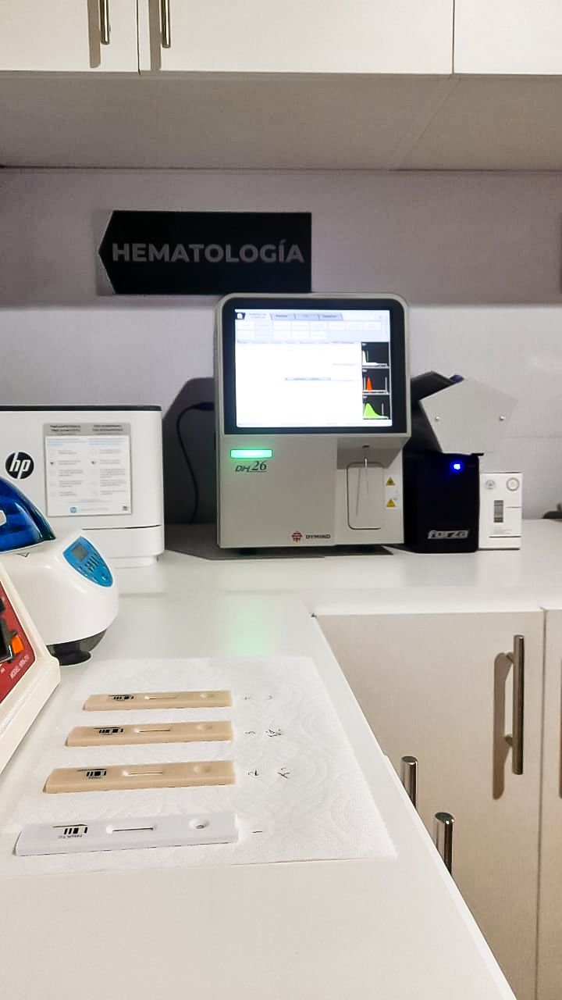
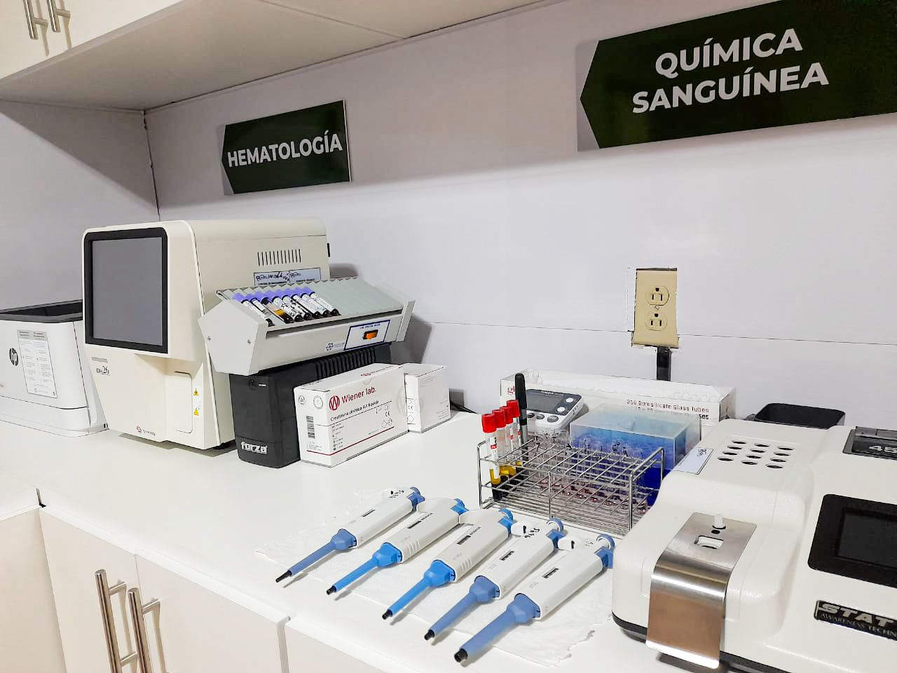

Galería de Fotos
Conoce nuestras instalaciones, áreas de atención, espacios de trabajo y parte del ambiente profesional con el que brindamos nuestros servicios.
Portafolio fotográfico
San Andrés, Lempira
Lugar donde se encuentra ubicado el Laboratorio Clínico Santa Lucía.

Área de espera
Zona cómoda y segura para pacientes y acompañantes mientras esperan atención.

Toma de muestras
Espacio preparado para realizar procedimientos de forma ordenada y profesional.

Equipos especializados
Herramientas y equipos utilizados para obtener resultados confiables y precisos.

Procesamiento de muestras
Área en la que se lleva a cabo el manejo y análisis de distintas muestras clínicas.

Instalaciones modernas
Vista general de espacios acondicionados para el trabajo clínico y la atención segura.
Visita nuestro centro
Instalaciones modernas
Espacios organizados y funcionales para una mejor atención.
Equipo actualizado
Recursos que apoyan estudios clínicos con precisión y confianza.
Comodidad del paciente
Ambiente agradable, limpio y seguro para cada visita.
Calidad en el servicio
Atención seria, ordenada y enfocada en cada persona.